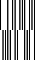

|
Zint Barcode Generator |
||
|---|---|---|
Developed by Laetus, Pharmacode Two-Track is an alternative system to Pharmacode One-Track used for the identification of pharmaceuticals. The symbology is able to encode whole numbers between 4 and 64570080.

Used by the United States Postal Service and due to be superseded by the OneCode system by 2009, the PostNet barcode is used for encoding zip-codes on mail items. PostNet uses numerical input data and includes a modulo-10 check digit. While Zint will encode PostNet symbols of any length, standard lengths used by USPS are PostNet6 (5 digits ZIP input), PostNet10 (5 digit ZIP + 4 digit user data) and PostNet12 (5 digit ZIP + 6 digit user data).

Used by the United States Postal Service and due to be superseded by the OneCode system by 2009, the PLANET (Postal Alpha Numeric Encoding Technique) barcode is used for encoding routing data on mail items. Planet uses numerical input data and includes a modulo-10 check digit. While Zint will encode PLANET symbols of any length, standard lengths used by USPS are Planet12 (11 digit input) and Planet14 (13 digit input).
|
Composite Symbols |
|
4-State Codes |